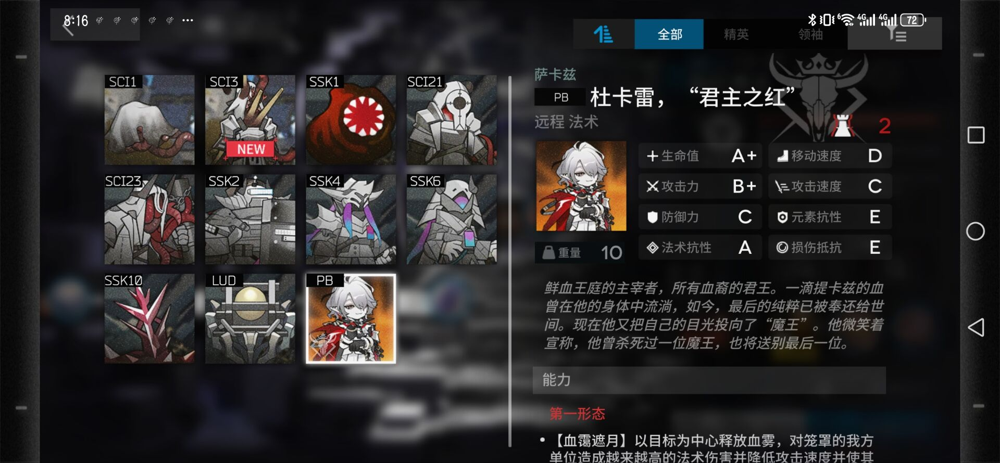

明日方舟即时战略塔防游戏1.游戏的趣味性：在塔防玩法中，明日方舟别出一格，没有走《王国保卫战》和《保卫萝卜》的老路子，而是开启了一种全新的塔防模式。游戏中的干员多种多样，怪物也各有特点，地图也各有特色。游戏还会不断开设活动，奖励丰厚。除了主线游戏，还有活动副本，肉鸽模式。此外，还有基建。2.游戏的挑战性：明日方舟的第一个挑战就是角色养成。这个说是挑战，到不难，但是的确会卡住游戏进度。第2个挑战，便是游戏主线本身，游戏主线本身会有精英怪和BOSS，每个精英怪和BOSS都各有特色，再结合地图，则有各自的打法。研究如何通关主线，已经有点难度。第3，便是活动本，每个活动都会有不同的主题，每个活动也会有特殊的机制以及BOSS。第4，便是纯粹的挑战本（一共2个）。游戏本身的奖励充足。3.游戏的完整性：任何一个活动、章节、主线、剧情、配音、角色等都相当完整。4.游戏的艺术性：二次元画风。剧情虽然没有配音，但游戏时的配音还是优质的，角色语音虽然不够精细，但依旧能体现出角色个性。虽然《明日方舟》在配音上算不上顶级，但是其绘画还是相当出色，角色着装也相当出色，特效也不少。《明日方舟》拥有一个独立的世界观，其思想内涵，还是相当广泛，这里不一一介绍，感兴趣自行体会。5.游戏的故事性：博大精深。博大精深。博大精深。